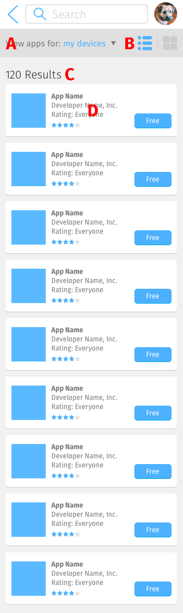
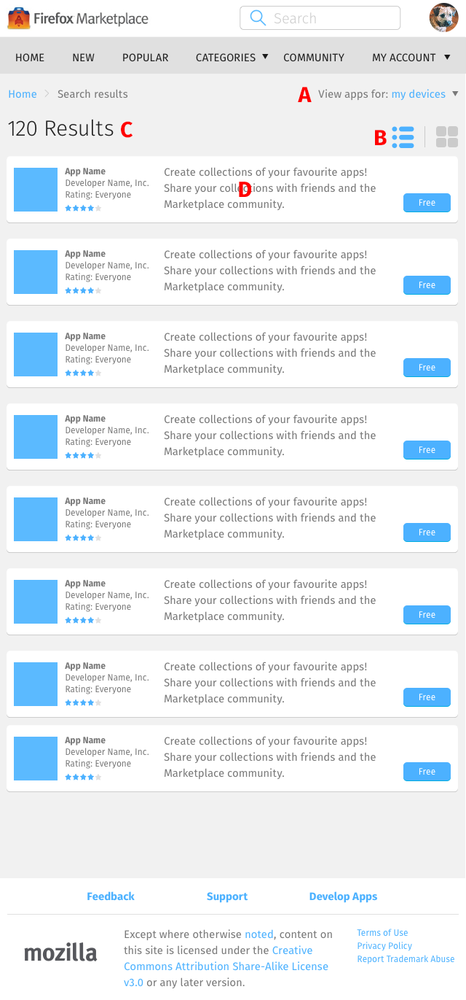
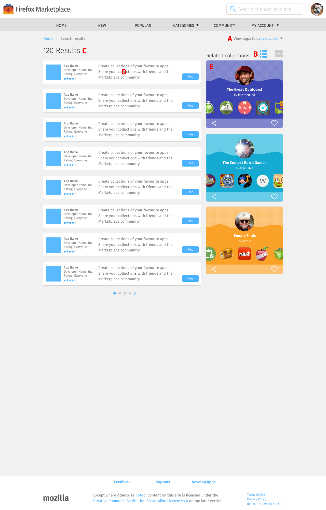

<div class="container">
	<div class="row">
		<div class="col-sm-12 col-md-12 col-lg-12">
			<h1>Search Results &rarr; Populated, List Layout</h1>
			
			<p class="longText">Every search result page defaults to using the list layout, unless changed to the <a href="search-layout-gallery.html">gallery layout</a>.</p>
      
      
      
      
       
      
      
      <ol class="longText letters">
        <li><strong>Device filter dropdown menu</strong>: refine search to apps made for a specific screen size.<br/>
        After selecting an option, the search results page refreshes.<br/>
        The available options are:
          <ul>
            <li>My devices (default option): the screen size that this option selects is eliminated from the list.</li>
            <li>Mobile</li>
            <li>Tablet</li>
            <li>Desktop</li>
          </ul>
        </li>
        <li><strong>Layout switch</strong>: list or gallery layout.</li>
        <li><strong>App listing</strong>, each of which contains:
          <ul>
            <li>First column: App icon</li>
            <li>Second column: App name, Developer name, Rating, Star rating</li>
            <li>Third column: App description <span class="warning">(limited to display how many characters?)</span>
            <li>Fourth column: Download/buy button</li>
          </ul>
        </li>
      </ol>
      
      <h3 class="specItem">Mobile and Tablet</h3>
      
      <p class="longText"><strong>App listing</strong>: displays unlimited rows of app listing, loading new ones on scrolldown.</p>
      
      <h3 class="specItem">Desktop</h3>
      
      <ol class="longText letters" start="5">
        <li><strong>App listing</strong>: displays 8 search results at a time.</li>
        <li><strong>Related collections</strong>: 3 collections.</li>
        <li><strong>Navigation</strong>: select the left/right arrow, or use the dots to display the next/previous 8 search results.</li>

      </ol>


		</div>
	</div>
	<!-- Pagination. If you have more than one page, set the multipage variable in the Frontmatter to true. Editing the pagination code happens in /_includes/homePagination.html.
		NOTE: This is currently broken in the Jekyll ver of this template.
		-->
		{% if page.multipage %}
			{% include homePagination.html %}
		{% endif %}
